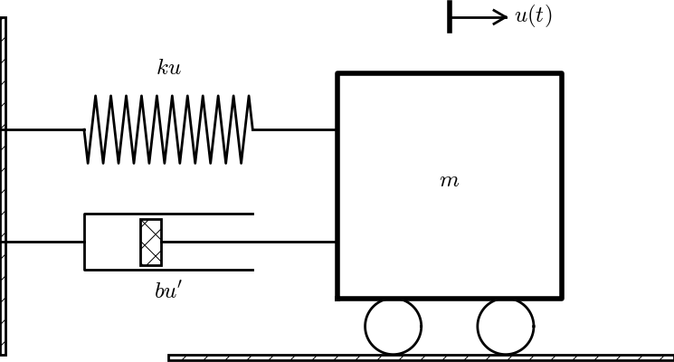

Figure 7: Oscillating body attached to a spring.

We shall in this section address a range of different second-order ODEs for mechanical vibrations and demonstrate how to reason about the scaling in different physical scenarios.
(hpl 7: Include more figures.)
The simplest differential equation model for mechanical vibrations reads $$ \begin{equation} mu'' + ku = 0,\quad u(0)=I,\ u'(0)=V\tp \tag{63} \end{equation} $$ This is a common model for a vibrating body with mass \( m \) attached to a linear spring with spring constant \( k \) (and force \( -ku \)). The quantity \( u(t) \) measures the displacement of the body. Figure 7 shows a typical mechanical sketch of such a system: some mass can move horizontally without friction and is connected to a spring that exerts a force \( -ku \) on the body.
Figure 7: Oscillating body attached to a spring.
The problem (63) has one independent variable \( t \) and one dependent variable \( u \). We introduce dimensionless versions of these variables: $$ \bar u =\frac{u}{u_c},\quad\bar t = \frac{t}{t_c},$$ where \( u_c \) and \( t_c \) are characteristic values of \( u \) and \( t \). Inserted in (63), we get $$ m\frac{u_c}{t_c^2}\frac{d^2\bar u}{d\bar t^2} + ku_c\bar u = 0, \quad u_c\bar u(0)=I,\quad \frac{u_c}{t_c}\frac{d\bar u}{d\bar t}(0)=V,$$ resulting in $$ \begin{equation} \frac{d^2\bar u}{d\bar t^2} + \frac{t_c^2 k}{m}\bar u = 0, \quad \bar u(0)=\frac{I}{u_c},\ \bar u'(0)=\frac{Vt_c}{u_c}\tp \tag{64} \end{equation} $$
What is an appropriate displacement scale \( u_c \)? The initial condition \( u(0)=I \) is a candidate, i.e., \( u_c=I \). But how to choose the time scale? Making the coefficient in front of the \( \bar u \) unity, such that both terms balance and are of size unity, is a candidate.
To better see what the proper scales of \( u \) and \( t \) are, we can look into the analytical solution of this problem. Although the exact solution of (63) is quite straightforward to calculate by hand, we take the opportunity to make use of SymPy to find \( u(t) \). The use of SymPy can later be generalized to vibration ODEs that are harder to solve by hand.
SymPy need all mathematical symbols to be explicitly created:
from sympy import *
u = symbols('u', cls=Function)
w = symbols('w', real=True, positive=True)
I, V, C1, C2 = symbols('I V C1 C2', real=True)
# Define differential equation: u'' + w**2*u = 0
def ode(u):
return diff(u, t, t) + w**2*u
diffeq = ode(u(t))
diffeq variable, defining the ODE, can be passed to a SymPy
function dsolve to find the symbolic solution of the ODE:
s = dsolve(diffeq, u(t))
# s is an u(t) == expression (Eq obj.), s.rhs grabs the expression
u_sol = s.rhs
print u_sol
C1*sin(t*w) + C2*cos(t*w), indicating
that there are two integration constants C1 and C2 to be determined
by the initial conditions. The result of applying these conditions is
a \( 2\times 2 \) linear system of algebraic equations that SymPy can solve
by the solve function. The code goes as follows:
# The solution u_sol contains integration constants C1 and C2
# but these are not symbols, substitute them by symbols
u_sol = u_sol.subs('C1', C1).subs('C2', C2)
# Determine C1 and C2 from the initial conditions
ic = [u_sol.subs(t, 0) - I, u_sol.diff(t).subs(t, 0) - V]
print ic # 2x2 algebraic system for C1 and C2
s = solve(ic, [C1, C2])
# s is now a dictionary: {C2: I, C1: V/w}
# substitute solution back in u_sol
u_sol = u_sol.subs(C1, s[C1]).subs(C2, s[C2])
print u_sol
u_sol variable is now I*cos(t*w) + V*sin(t*w)/w.
Since symbolic software is far from bug-free and can give wrong results,
we should always check the answer. Here, we insert the solution in the ODE
to see if the result is zero, and we insert the solution in the initial
conditions to see that these are fulfilled:
# Check that the solution fulfills the ODE and init.cond.
print simplify(ode(u_sol)),
print u_sol.subs(t, 0) - I, diff(u_sol, t).subs(t, 0) - V
The solution of the ODE in mathematical notation is $$ u(t) = I\cos(\omega t) + \frac{V}{\omega}\sin(\omega t),\quad \omega = \sqrt{\frac{k}{m}}\tp$$ More insight arises from rewriting such an expression in the form \( A\cos(wt - \phi) \): $$ u(t) = \sqrt{I^2 + \frac{V^2}{\omega^2}}\cos(wt - \phi),\quad \phi = \tan^{-1}(V/(\omega I))\tp $$ Now we see that the \( u \) corresponds to cosine oscillations with a phase shift \( \phi \) and amplitude \( \sqrt{I^2 + (V/\omega)^2} \).
The amplitude of \( u \) is \( \sqrt{I^2 + V^2/\omega^2} \), and this expression is obviously a candidate for \( u_c \). However, the simpler choice \( u_c=\max (I, V/\omega) \) is also relevant and more attractive than the square root expression (but potentially a factor 1.4 wrong compared to the exact amplitude). It is not very important to have \( |u|\leq 1 \), the point is to avoid \( |u| \) very small or large.
What is an appropriate time scale? Looking at (64) and arguing that \( \bar u'' \) and \( \bar u \) both should be around unity in size, the coefficient \( t_c^2k/m \) must equal unity, implying that \( t_c=\sqrt{m/k} \). Also from the analytical solution we see that the solution goes like the sine or cosine of \( \omega t \) so \( 1/\omega = \sqrt{m/k} \) can be a characteristic time scale. Likewise, one period of the oscillations, \( P=2\pi/\omega \) can be the characteristic time, leading to \( t_c=2\pi/\omega \).
With \( u_c=I \) and \( t_c=\sqrt{m/k} \) we get the scaled model $$ \begin{equation} \frac{d^2\bar u}{d\bar t^2} + \bar u = 0, \quad \bar u(0)=1,\ \bar u'(0)=\alpha, \tag{65} \end{equation} $$ where \( \alpha \) is a dimensionless parameter: $$ \alpha = \frac{V}{I}\sqrt{\frac{m}{k}}\tp$$ Note that in case \( V=0 \), we have "scaled away" all physical parameters. The universal solution without physical parameters is then \( \bar u(\bar t)=\cos\bar t \).
The unscaled solution is recovered as $$ \begin{equation} u(t) = I\bar u(\sqrt{k/m}\bar t)\tp \tag{66} \end{equation} $$ This expressions shows that the scaling is simply a matter of stretching or shrinking the axes.
Using \( u_c = V/\omega \), the equation is not changed, but the initial conditions become $$ \bar u(0) = \frac{I}{u_c} = \frac{I\omega}{V} =\frac{I}{V}\sqrt{\frac{k}{m}} = \alpha^{-1},\quad \bar u'(0)=1\tp$$
With \( u_c=V/\omega \) and one period as time scale, \( t_c=2\pi\sqrt{m/k} \), we get the alternative model $$ \begin{equation} \frac{d^2\bar u}{d\bar t^2} + 4\pi^2 \bar u = 0, \quad \bar u(0)=\alpha^{-1},\ \bar u'(0)=2\pi\tp \tag{67} \end{equation} $$ The unscaled solution is in this case recovered by $$ \begin{equation} u(t) = V\sqrt{\frac{m}{k}}\bar u(2\pi\sqrt{k/m}\bar t)\tp \tag{68} \end{equation} $$
The solution goes like \( \cos\omega t \), where \( \omega =\sqrt{m/k} \) must have dimension 1/s. Actually, \( \omega \) has dimension radians per second: rad/s. A radian is dimensionless since it is arc (length) divided by radius (length), but still regarded as a unit. The period \( P \) of vibrations is a more intuitive quantity than the frequency \( \omega \). The relation between \( P \) and \( \omega \) is \( P=2\pi/\omega \). The number of oscillation cycles per period, \( f \), is a more intuitive measurement of frequency and also known as frequency. Therefore, to be precise, \( \omega \) should be named angular frequency. The relation between \( f \) and \( T \) is \( f=1/T \), so \( f=2\pi\omega \) and measured in Hz (1/s), which is the unit for counts per unit time.
For vertical vibrations in the gravity field, the model (63) must also take the gravity force \( -mg \) into account: $$ mu'' + ku = -mg\tp$$ How does the new term \( -mg \) influence the scaling? We observe that if there is no movement of the body, \( u''=0 \), and the spring elongation matches the gravity force: \( ku = -mg \), leading to a steady displacement \( u=-mg/k \). We can then have oscillations around this equilibrium point. A natural scaling for \( u \) is therefore $$ \bar u = \frac{u - (-mg/k)}{u_c}=\frac{uk + mg}{ku_c}\tp$$ The scaled differential equation with the same time scale as before reads $$ \frac{d^2\bar u}{d\bar t^2} + \bar u - \frac{t_c^2}{u_c}g = -\frac{t_c^2}{u_c}g,$$ leading to $$ \frac{d^2\bar u}{d\bar t^2} + \bar u = 0\tp$$ The initial conditions \( u(0)=I \) and \( u'(0)=V \) become, with \( u_c=I \), $$ \bar u(0) = 1 + \frac{mg}{kI},\quad \frac{d\bar u}{d\bar t}(0)=\sqrt{\frac{m}{k}}\frac{V}{I}\tp$$ We see that the oscillations around the equilibrium point in the gravity field are identical to the horizontal oscillations without gravity, except for an offset \( mg/(kI) \) in the displacement.
Now we add a transient forcing term \( F(t) \) to the model (63): $$ \begin{equation} mu'' + ku = F(t),\quad u(0)=I,\ u'(0)=V\tp \tag{69} \end{equation} $$ Take the forcing to be oscillating: $$ F(t) = A\cos(\psi t)\tp$$ The technical steps of the scaling are still the same, with the intermediate result $$ \begin{equation} \frac{d^2\bar u}{d\bar t^2} + \frac{t_c^2 k}{m}\bar u = \frac{t_c^2}{mu_c}A\cos(\psi t_c\bar t), \quad \bar u(0)=\frac{I}{u_c},\ \bar u'(0)=\frac{Vt_c}{u_c}\tp \tag{70} \end{equation} $$ What are typical displacement and time scales? This is not so obvious without knowing the details of the solution, because there are three parameters (\( I \), \( V \), and \( A \)) that influence the magnitude of \( u \). Moreover, there are two time scales, one for the free vibrations of the systems and one for the forced vibrations \( F(t) \).
We may look into the exact solution to see what the scales are. We
continue the SymPy session from the previous section and perform much
of the same steps. Note that we use w for \( \omega = \sqrt{k/m} \)
in the computer code (to obtain a more direct visual counterpart to
\( \omega \)).
SymPy may get confused when coefficients in differential equations
contain several symbols. We therefore rewrite the equation with
at most one symbol in each coefficient.
The amplitude \( A/m \) in the forcing term is of this reason
replaced by the symbol A1.
A, A1, m, psi = symbols('A A1 m psi', positive=True, real=True)
def ode(u):
return diff(u, t, t) + w**2*u - A1*cos(psi*t)
diffeq = ode(u(t))
u_sol = dsolve(diffeq, u(t))
u_sol = u_sol.rhs
# Determine the constants C1 and C2 in u_sol
# (first substitute our own declared C1 and C2 symbols,
# then use the initial conditions)
u_sol = u_sol.subs('C1', C1).subs('C2', C2)
eqs = [u_sol.subs(t, 0) - I, u_sol.diff(t).subs(t, 0) - V]
s = solve(eqs, [C1, C2])
u_sol = u_sol.subs(C1, s[C1]).subs(C2, s[C2])
# Check that the solution fulfills the equation and init.cond.
print simplify(ode(u_sol))
print simplify(u_sol.subs(t, 0) - I)
print simplify(diff(u_sol, t).subs(t, 0) - V)
u_sol = simplify(expand(u_sol.subs(A1, A/m)))
print u_sol
A/m*cos(psi*t)/(-psi**2 + w**2) + V*sin(t*w)/w +
(A/m + I*psi**2 - I*w**2)*cos(t*w)/(psi**2 - w**2)
$$ u(t) = \frac{A/m}{\omega^2 - \psi^2}\cos(\psi t) + \frac{V}{\omega} \sin(\omega t) + \left(\frac{A/m}{\psi^2 - \omega^2} + I\right) \cos (\omega t)\tp $$ Obviously, this expression is only meaningful for \( \psi\neq\omega \). The case \( \psi = \omega \) gives an infinite amplitude in this model, a phenomenon known as resonance. The amplitude becomes finite when damping is included, see the section Damped vibrations with forcing.
For the case the system starts from rest, \( I=V=0 \), and the forcing is the only driving mechanism, we can simplify: $$ \begin{align*} u(t) &= \frac{A}{m(\omega^2 - \psi^2)}\cos(\psi t) + \frac{A}{m(\psi^2 - \omega^2)}\cos (\omega t)\\ &= \frac{A}{m(\omega^2 - \psi^2)}(\cos(\psi t) - \cos(\omega t))\tp \end{align*} $$ To gain more insight, \( \cos(\psi t) - \cos(\omega t) \) can be rewritten in terms of the mean frequency \( (\psi + \omega)/2 \) and the difference in frequency \( (\psi - \omega)/2 \): $$ \begin{equation} u(t) = \frac{A}{m(\omega^2 - \psi^2)} 2 \sin\left(\frac{\psi - \omega}{2}t\right) \sin\left(\frac{\psi + \omega}{2}t\right), \tag{71} \end{equation} $$ showing that there is a signal with frequency \( (\psi + \omega)/2 \) whose amplitude has a (much) slower frequency \( (\psi - \omega)/2 \). Figure 8 shows an example on such a signal.
Figure 8: Signal with frequency 3.1 and envelope frequency 0.2.

A characteristic displacement can in the latter special case be taken as \( u_c= A/(m(\omega^2 - \psi^2)) \). This is also a relevant choice in the more general case \( I\neq0, V\neq 0 \), unless \( I \) or \( V \) is so large that it dominates over the amplitude caused by the forcing. With \( u_c= A/(m(\omega^2 - \psi^2)) \) we also have three special cases: \( \omega \ll \psi \), \( \omega \gg\psi \), and \( \psi \sim \omega \). In the latter case we need \( u_c= A/(m(\omega^2 - \psi^2)) \) if we want \( |u|\leq 1 \). When \( \omega \) and \( \psi \) are significantly different, we may choose one of them and neglect the smaller. Choosing \( \omega \) means \( u_c=A/k \), which is the relevant scale if \( \omega\gg\psi \). In the opposite case, \( \omega\ll\psi \), \( u_c=A/(m\psi^2) \).
The time scale is dominated by the fastest oscillations, which are of frequency \( \psi \) or \( \omega \) when these are close and the largest of them when they are distant. In any case, we set \( t_c=1/\max(\psi,\omega) \).
Going back to (70), we may demand that all the three terms in the differential equation are of size unity. This leads to \( t_c=\sqrt{m/k} \) and \( u_c=At_c^2/m = A/k \). The formula for \( u_c \) is a kind of measure of the ratio of the forcing and the spring force (the dimensionless number \( A/(ku_c) \) would be this ratio).
Looking at (71), we see that if \( \psi\ll\omega \), the amplitude can be approximated by \( A/(m\omega^2)=A/k \), showing that the scale \( u_c=A/k \) is relevant for small excitation frequency \( \psi \) compared to the free vibration frequency \( \omega \).
The next step is to work out the dimensionless ODE for the chosen scales. We first select the time scale based on the free oscillations with frequency \( \omega \), i.e., \( t_c=1/\omega \). Inserting the expression in (70) results in $$ \begin{equation} \frac{d^2\bar u}{d\bar t^2} + \bar u = \gamma \cos(\delta\bar t), \quad \bar u(0)=\alpha,\ \bar u'(0)=\beta\tp \tag{72} \end{equation} $$ Here we have four dimensionless variables $$ \begin{align} \alpha &= \frac{I}{u_c}, \tag{73}\\ \beta &= \frac{Vt_c}{u_c} = \frac{V}{\omega u_c}, \tag{74}\\ \gamma &= \frac{t_c^2 A}{mu_c} = \frac{A}{ku_c}, \tag{75}\\ \delta &= \frac{t_c}{\psi^{-1}} = \frac{\psi}{\omega}\tp \tag{76} \end{align} $$ We remark that the choice of \( u_c \) has so far not been made. Several different cases will be considered below, and certain choices reduce the number of independent dimensionless variables to three.
(hpl 8: New comment in the paragraph above.)
The four dimensionless variables above have interpretations as ratios of physical effects:
Any solver for (70) can be used for (72). More details are provided at the end of the section Damped vibrations with forcing.
Now we shall discuss various choices of \( u_c \). Close to resonance, when \( \psi\sim\omega \), we may set \( u_c=A/(m(\omega^2 - \psi^2)) \). The dimensionless numbers become in this case $$ \begin{align*} \alpha &= \frac{I}{u_c} = \frac{I}{A/k}(1-\delta^2),\\ \beta &= \frac{V}{\omega u_c} = \frac{V\sqrt{km}}{A}(1-\delta^2),\\ \gamma &= \frac{A}{ku_c} = 1-\delta^2,\\ \delta &= \frac{\psi}{\omega}\tp \end{align*} $$ With \( \psi = 0.99\omega \), \( \delta =0.99 \), \( V=0 \), \( \alpha = \gamma = 1-\delta^2 = 0.02 \), we have the problem $$ \frac{d^2\bar u}{d\bar t^2} + \bar u = 0.02 \cos(0.99\bar t), \quad \bar u(0)=0.02,\ \bar u'(0)=0\tp $$ This is a problem with a very small initial condition and a very small forcing, but the state close to resonance brings the amplitude up to about unity, see the result of numerical simulations with \( \delta=0.99 \) in Figure 9. Neglecting \( \alpha \), the solution is given by (71), which here means \( A=1-\delta^2 \), \( m=1 \), \( \omega=1 \), \( \psi=\delta \): $$ \bar u(\bar t) = 2\sin(-0.005\bar t)\sin(0.995\bar t)\tp $$ Note that this is a problem which demands very high accuracy in the numerical calculations. Using 20 time steps per period gives a significant angular frequency error and an amplitude of about 1.4. We used 160 steps per period for the results in Figure 9.
Figure 9: Forced undamped vibrations close to resonance.

Using the displacement scale \( u_c=A/k \) leads to (72) with $$ \begin{align*} \alpha &= \frac{I}{u_c} = \frac{I}{A/k},\\ \beta &= \frac{V}{\omega u_c} = \frac{V k}{A\omega},\\ \gamma &= \frac{A}{ku_c} = 1,\\ \delta &= \frac{\psi}{\omega}\tp \end{align*} $$ Simulating a case with \( \delta=0.5 \), \( \alpha=1 \), and \( \beta=0 \) gives the oscillations in Figure 10, which is a case away from resonance, and the amplitude is about unity. However, choosing \( \delta =0.99 \) (close to resonance) results in a figure similar to Figure 9, except that the amplitude is about \( 10^2 \) because of the moderate size of \( u_c \). The present scaling is therefore most suitable away from resonance, and when the terms containing \( \cos\omega t \) and \( \sin\omega t \) are important (e.g., \( \omega\gg\psi \)).
Figure 10: Forced undamped vibrations away from resonance.

Finally, we may look at the case where \( \psi\gg\omega \) such that \( u_c=A/(m\psi^2) \) is a relevant scale (i.e., omitting \( \omega^2 \) compared to \( \psi^2 \) in the denominator), but in this case we should use \( t_c=1/\psi \) since the force varies much faster than the free vibrations of the system. This choice of \( t_c \) changes the scaled ODE to $$ \begin{equation} \frac{d^2\bar u}{d\bar t^2} + \delta^{-2}\bar u = \gamma \cos(\bar t), \quad \bar u(0)=\alpha,\ \bar u'(0)=\beta, \tag{77} \end{equation} $$ where $$ \begin{align*} \alpha &= \frac{I}{u_c} = \frac{I}{A/k}\delta^2,\\ \beta &= \frac{Vt_c}{u_c} = \frac{V\sqrt{km}}{A}\delta,\\ \gamma &= \frac{t_c^2 A}{mu_c} = 1,\\ \delta &= \frac{t_c}{\psi^{-1}} = \frac{\psi}{\omega}\tp \end{align*} $$ In the regime \( \psi\gg\omega \), \( \delta\gg 1 \), thus making \( \alpha \) and \( \beta \) large. However, if \( \alpha \) and/or \( \beta \) is large, the initial condition dominates over the forcing, and will also dominate the amplitude of \( u \), thereby making the scaling of \( u \) inappropriate. In case \( I=V=0 \) so that \( \alpha=\beta=0 \), (71) predicts (\( A=m=1 \), \( \omega=\delta^{-1} \), \( \psi=1 \)) $$ \bar u(\bar t) = (\delta^{-2}-1)^{-1}2 \sin\left(\frac{1}{2}(1 -\delta^{-1})\bar t\right) \sin\left(\frac{1}{2}(1 +\delta^{-1})\bar t\right), $$ which has an amplitude about \( 2 \) for \( \delta\gg 1 \). Figure 11 shows a case.
Figure 11: Forced undamped vibrations with rapid forcing.

With \( \alpha=0.05\delta^2=5 \), we get a significant contribution from the free vibrations (the homogeneous solution of the ODE) as shown in Figure 12. For larger \( \alpha \) values, one must base \( u_c \) on \( I \) instead. (The graphs in Figure 11 and 12 were produced by numerical simulations with 160 time steps per period of the forcing.)
Figure 12: Forced undamped vibrations with rapid forcing and initial displacement of 5.

Choosing \( u_c=I \) gives $$ \begin{equation} \frac{d^2\bar u}{d\bar t^2} + \bar u = \gamma\cos(\delta\bar t), \quad \bar u(0)=1,\ \bar u'(0)=\beta, \tag{78} \end{equation} $$ with $$ \begin{align} \beta &= \frac{Vt_c}{u_c} = \frac{V}{I}\sqrt{\frac{m}{k}}, \tag{79}\\ \gamma & = \frac{tc^2A}{mu_c} = \frac{A}{ku_c} = \frac{A}{kI} \tp \tag{80} \end{align} $$ This scaling is not relevant close to resonance since then \( u_c\gg I \).
We now introduce a linear damping force \( bu'(t) \) in the equation of motion: $$ \begin{equation} mu'' + bu' + ku = A\cos(\psi t),\quad u(0)=I,\ u'(0)=V\tp \tag{81} \end{equation} $$ Figure 13 shows a typical one-degree-of-freedom mechanical system with a linear dashpot, representing the damper (\( bu' \)), a linear spring (\( ku \)), and an external force (\( F \)).
Figure 13: Oscillating body with external force, attached to a spring and damper.

The standard scaling procedure results in $$ \begin{equation} \frac{d^2\bar u}{d\bar t^2} + \frac{t_c b}{m}\frac{d\bar u}{d\bar t} + \frac{t_c^2 k}{m}\bar u = \frac{t_c^2}{mu_c}A\cos(\psi t_c\bar t), \quad \bar u(0)=\frac{I}{u_c},\ \bar u'(0)=\frac{Vt_c}{u_c}\tp \tag{82} \end{equation} $$
To choose scales, it is (as always) a great advantage to look into exact solutions. Using SymPy to solve (81) is, in principle, very straightforward:
>>> diffeq = diff(u(t), t, t) + b/m*diff(u(t), t) + w**2*u(t)
>>> s = dsolve(diffeq, u(t))
>>> s.rhs
C1*exp(t*(-b - sqrt(b - 2*m*w)*sqrt(b + 2*m*w))/(2*m)) +
C2*exp(t*(-b + sqrt(b - 2*m*w)*sqrt(b + 2*m*w))/(2*m))
dsolve are replaced by manual steps. That is, we solve the ODE "by hand",
but use SymPy to assist the calculations.
The solution is composed of a homogeneous
solution \( u_h \) of \( mu'' + bu' + ku=0 \) and one particular solution \( u_p \)
of the nonhomogeneous equation
\( mu'' + bu' + ku=A\cos(\psi t) \). The homogeneous solution with
damped oscillations (requiring \( b < 2\sqrt{mk} \)) can be
found by the following code. We have divided the differential equation
by \( m \) and introduced \( B=\frac{1}{2}b/m \) and let A1 represent
\( A/m \) to simplify expressions and
help SymPy with less symbols in the equation. Without these simplifications,
SymPy stalls in the computations due to too many symbols in the equation.
The problem is actually a solid argument for scaling differential equations
before asking SymPy to solve them since scaling effectively reduces the
number of parameters in the equations!
The following SymPy steps derives the solution of the homogeneous ODE:
u = symbols('u', cls=Function)
t, w, B, A, A1, m, psi = symbols('t w B A A1 m psi',
positive=True, real=True)
def ode(u, homogeneous=True):
h = diff(u, t, t) + 2*B*diff(u, t) + w**2*u
f = A1*cos(psi*t)
return h if homogeneous else h - f
# Find coefficients in polynomial (in r) for exp(r*t) ansatz
r = symbols('r')
ansatz = exp(r*t)
poly = simplify(ode(ansatz)/ansatz)
# Convert to polynomial to extract coefficients
poly = Poly(poly, r)
# Extract coefficients in poly: a_*t**2 + b_*t + c_
a_, b_, c_ = poly.coeffs()
# Assume b_**2 - 4*a_*c_ < 0
d = -b_/(2*a_)
if a_ == 1:
omega = sqrt(c_ - (b_/2)**2) # nicer formula
else:
omega = sqrt(4*a_*c_ - b_**2)/(2*a_)
# The homogeneous solution is a linear combination of a
# cos term (u1) and a sin term (u2)
u1 = exp(d*t)*cos(omega*t)
u2 = exp(d*t)*sin(omega*t)
C1, C2, V, I = symbols('C1 C2 V I', real=True)
u_h = simplify(C1*u1 + C2*u2)
print 'u_h:', u_h
assert simplify(ode(u_h)) == 0
assert statement in Python. The argument is
a boolean expression, and if the expression evaluates to False,
an AssertionError is raised and the program aborts (otherwise assert
runs silently for a True boolean expression). Hereafter, we will use
assert for consistency checks in computer code.
The ansatz for the particular solution \( u_p \) is $$ u_p= C_3\cos(\psi t) + C_4\sin(\psi t),$$ which inserted in the ODE gives two equations for \( C_3 \) and \( C_4 \). The relevant SymPy statements are
# Particular solution
C3, C4 = symbols('C3 C4')
u_p = C3*cos(psi*t) + C4*sin(psi*t)
eqs = simplify(ode(u_p, homogeneous=False))
# Collect cos(omega*t) terms
print 'eqs:', eqs
eq_cos = simplify(eqs.subs(sin(psi*t), 0).subs(cos(psi*t), 1))
eq_sin = simplify(eqs.subs(cos(psi*t), 0).subs(sin(psi*t), 1))
s = solve([eq_cos, eq_sin], [C3, C4])
u_p = simplify(u_p.subs(C3, s[C3]).subs(C4, s[C4]))
# Check that the solution is correct
assert simplify(ode(u_p, homogeneous=False)) == 0
u_sol = u_h + u_p # total solution
# Initial conditions
eqs = [u_sol.subs(t, 0) - I, u_sol.diff(t).subs(t, 0) - V]
# Determine C1 and C2 from the initial conditions
s = solve(eqs, [C1, C2])
u_sol = u_sol.subs(C1, s[C1]).subs(C2, s[C2])
u_sol is indeed the correct solution:
checks = dict(
ODE=simplify(expand(ode(u_sol, homogeneous=False))),
IC1=simplify(u_sol.subs(t, 0) - I),
IC2=simplify(diff(u_sol, t).subs(t, 0) - V))
for check in checks:
msg = '%s residual: %s' % (check, checks[check])
assert checks[check] == sympify(0), msg
u_sol = u_sol.subs(A, A/m) to get the right
expression for the solution.
Using latex(u_sol) results in a huge expression, which should be
manually ordered to something like the following:
$$
\begin{align*} u = &
\frac{Am^{-1}}{4 B^{2} \psi^{2} +
\Omega^{2}} \left(2 B \psi
\sin{\left (\psi t \right )} - \Omega\cos{\left (\psi t \right )}\right) + \\
&
{e^{-B t}} \biggl(
C_1 \cos{\left( t \sqrt{\omega^{2}- B^{2}}\right)} +
C_2 \sin{\left (t \sqrt{\omega^{2}- B^{2}}\right )}\biggr)\\
C_1 &= \frac{Am^{-1} \Omega + 4 I B^{2} \psi^{2} +
I\Omega^2}{
4 B^{2} \psi^{2} + \Omega^2}\\
C_2 &=
\frac{- Am^{-1} B\Omega + 4 I B^{3} \psi^{2} +
I B\Omega^2 + 4 V B^{2}\psi^{2} +
V\Omega^2}{
\sqrt{\omega^{2} - B^{2}}
\left(4 B^{2} \psi^{2} + \Omega^2\right)},\\
\Omega &= \psi^2 - \omega^2\tp
\end{align*}
$$
The most important feature of this solution is that there are two time scales with frequencies \( \psi \) and \( \sqrt{\omega^2 - B^2} \), but the latter appears in terms that decay as \( e^{-Bt} \) in time. The attention is usually on longer periods of time, so in that case the solution simplifies to $$ \begin{align} u &= \frac{Am^{-1}}{4 B^{2} \psi^{2} + \Omega^{2}} \left(2 B \psi \sin{\left (\psi t \right )} - \Omega\cos{\left (\psi t \right )}\right) \nonumber\\ &= \frac{A}{m}\frac{1}{\sqrt{4B^2\psi^2 + \Omega^2}}\cos(\psi t + \phi) \frac{(\psi\omega)^{-1}}{(\psi\omega)^{-1}} \nonumber\\ & = \frac{A}{k} Q\delta^{-1}\left(1 + Q^2(\delta - \delta^{-1})\right)^{- \frac{1}{2}}\cos(\psi t + \phi), \tag{83} \end{align} $$ where we have introduced the dimensionless numbers $$ Q = \frac{\omega}{2B},\quad\delta = \frac{\psi}{\omega},$$ and $$ \phi = \tan^{-1}\left(-\frac{2B}{\omega^2 - \psi^2}\right) = \tan^{-1}\left(\frac{Q^{-1}}{\delta^2 - 1}\right)\tp$$ \( Q \) is commonly called quality factor and \( \phi \) is the phase shift. Dividing (83) by \( A/k \), which is a common scale for \( u \), gives the dimensionless relation $$ \begin{equation} \frac{u}{A/k} = \frac{Q}{\delta} R(Q,\delta)^{\frac{1}{2}}\cos(\psi t + \phi), \quad R(Q,\delta) = \left(1 + Q^2(\delta - \delta^{-1})\right)^{-1}\tp \tag{84} \end{equation} $$
Much of the discussion about scales in the previous sections are relevant also when damping is included. Although the oscillations with frequency \( \sqrt{\omega^2-B^2} \) die out for \( t\gg B^{-1} \), we start with using this frequency for the time scale. A highly relevant assumption for engineering applications of (81) is that the damping is small. Therefore, \( \sqrt{\omega^2-B^2} \) is close to \( \omega \) and we simply apply \( t_c=1/\omega \) as before (if not the interest in large \( t \) for which the oscillations with frequency \( \omega \) has died out).
The coefficient in front of the \( \bar u' \) term then becomes $$ \frac{b}{m\omega} = \frac{2B}{\omega} = Q^{-1}\tp$$ The rest of the ODE is given in the previous section, and the particular formulas depend on the choices of \( t_c \) and \( u_c \).
The relevant scale for \( u_c \) at or nearby resonance (\( \psi = \omega \)) becomes different from the previous section, since with damping, the maximum amplitude is a finite value. For \( t\gg B^{-1} \) when the \( \sin\psi t \) term is dominating, we have for \( \psi = \omega \): $$ u = \frac{Am^{-1}2B\psi}{4B^2\psi^2}\sin (\psi t) = \frac{A}{2Bm\psi}\sin (\psi t) = \frac{A}{b\psi}\sin (\psi t) \tp $$ This motivates the choice $$ u_c = \frac{A}{b\psi} = \frac{A}{b\omega}\tp$$ (It is wise during computations like this to stop and check the dimensions: \( A \) must be \( [\hbox{MLT}^{-2}] \) from the original equation (\( F(t) \) must have the same dimension as \( mu'' \)), \( bu' \) also has dimension \( [\hbox{MLT}^{-2}] \), implying that \( b \) has dimension \( [\hbox{MT}^{-1}] \). \( A/b \) then has dimension \( LT^{-1} \), and \( A/(b\psi) \) gets dimension \( [L] \), which matches what we want for \( u_c \).)
The differential equation on dimensionless form becomes $$ \begin{equation} \frac{d^2\bar u}{d\bar t^2} + Q^{-1}\frac{d\bar u}{d\bar t} + \bar u = \gamma \cos(\delta\bar t), \quad \bar u(0)=\alpha,\ \bar u'(0)=\beta, \tag{85} \end{equation} $$ with
$$ \begin{align} \alpha &= \frac{I}{u_c} = \frac{Ib}{A}\sqrt{\frac{k}{m}}, \tag{86}\\ \beta &= \frac{Vt_c}{u_c} = \frac{Vb}{A}, \tag{87}\\ \gamma &= \frac{t_c^2 A}{mu_c} = \frac{b\omega}{k}, \tag{88}\\ \delta &= \frac{t_c}{\psi^{-1}} = \frac{\psi}{\omega} = 1\tp \tag{89} \end{align} $$
In the limit \( \omega\gg\psi \) and \( t\gg B^{-1} \), $$ u \approx \frac{A}{m\omega^2}\cos\psi t = \frac{A}{k}\cos\psi t,$$ showing that \( u_c=A/k \) is an appropriate displacement scale. (Alternatively, we get this scale also from demanding \( \gamma=1 \) in the ODE.) The dimensionless numbers \( \alpha \), \( \beta \), and \( \delta \) are as for the forced vibrations without damping.
In the limit \( \omega\ll\psi \), we should base \( t_c \) on the rapid variations in the excitation: \( t_c=1/\psi \).
It is easy to reuse a solver for a general vibration problem also
in the dimensionless case.
In particular, we may use the solver function in the
file vib.py:
def solver(I, V, m, b, s, F, dt, T, damping='linear'):
dt. With damping='linear', we have \( f(u')=bu' \), while the
other value is 'quadratic', meaning \( f(u')=b|u'|u' \).
Given the dimensionless numbers \( \alpha \), \( \beta \), \( \gamma \), \( \delta \),
and \( Q \),
an appropriate call for solving (72) is
u, t = solver(I=alpha, V=beta, m=1, b=1.0/Q,
s=lambda u: u, F=lambda t: gamma*cos(delta*t),
dt=2*pi/n, T=2*pi*P)
n is the number of intervals per period and P is the number
of periods to be simulated.
We way wrap this call in a solver_scaled function and wrap it furthermore
with joblib to avoid repeated calls,
as we explained in
the section Making software for utilizing the scaled model:
from vib import solver as solver_unscaled
def solver_scaled(alpha, beta, gamma, delta, Q, T, dt):
"""
Solve u'' + (1/Q)*u' + u = gamma*cos(delta*t),
u(0)=alpha, u'(1)=beta, for (0,T] with step dt.
"""
print 'Computing the numerical solution'
from math import cos
return solver_unscaled(I=alpha, V=beta, m=1, b=1./Q,
s=lambda u: u,
F=lambda t: gamma*cos(delta*t),
dt=dt, T=T, damping='linear')
import joblib
disk_memory = joblib.Memory(cachedir='temp')
solver_scaled = disk_memory.cache(solver_scaled)
main function). It is an ideal application for exploring
scaled vibration models.
The differential equation for an oscillating electric circuit is very similar to the equation for forced, damped, mechanical vibrations, and their dimensionless form is identical. This fact will now be demonstrated.
The current \( I(t) \) in a circuit with an inductor with inductance \( L \), a capacitor with capacitance \( C \), and overall resistance \( R \), obeys the equation $$ \begin{equation} \ddot I + \frac{R}{L}\dot I + \frac{1}{LC}I = V(t), \tag{90} \end{equation} $$ where \( V(t) \) is the voltage source powering the circuit. We introduce $$ \bar I=\frac{I}{I_c},\quad \bar t = \frac{t}{t_c},$$ and get $$ \frac{d^2\bar I}{d\bar t^2} + \frac{t_c R}{L}\frac{d\bar I}{d\bar t} + \frac{t_c^2}{LC}\bar I = \frac{t_c^2V_c}{I_c} \bar V(t)\tp$$ Here, we have scaled \( V(t) \) according to $$ \bar V(\bar t) = \frac{V(t_c\bar t)}{\max_t V(t)}\tp$$
The time scale \( t_c \) is chosen to make \( \ddot I \) and \( I/(LC) \) balance, \( t_c = \sqrt{LC} \). Choosing \( I_c \) to make the coefficient in the source term of unit size, means \( I_c = LCV_c \). With $$ Q^{-1} = R\sqrt{\frac{C}{L}},$$ we get the scaled equation $$ \begin{equation} \frac{d^2\bar I}{d\bar t^2} + Q^{-1}\frac{d\bar I}{d\bar t} + \bar I = \bar V(t), \tag{91} \end{equation} $$ which is basically the same as we derived for mechanical vibrations. (Two additional dimensionless variables will arise from the initial conditions for \( I \), just as in the mechanics cases.)
Density (mass per volume: \( [\hbox{ML}^{-3}] \)) of water is
given as 1.05 ounce per fluid ounce. Use the PhysicalQuantity object
to convert to \( \hbox{kg\,m}^{-3} \).
Filename: density_conversion.
The height \( y \) of a body thrown up in the air is given by $$ y = v_0t - \frac{1}{2}gt^2,$$ where \( t \) is time, \( v_0 \) is the initial velocity of the body at \( t=0 \), and \( g \) is the acceleration of gravity. Scale this formula. Use two choices of the characteristic time: the time it takes to reach the maximum \( y \) value and the time it takes to return to \( y=0 \).
Filename: vertical_motion.
The problem in the section Scaling a cooling problem with time-dependent surroundings applies a temperature scaling $$ \bar T = \frac{T-T_0}{T_m-T_0},$$ which is not always suitable.
a) Consider the case \( T_0=T_m \) and the fact that \( |T_m-T_0| \) does not represent the characteristic temperature scale since it collapses to zero. Formulate a suitable scaling in this case. The figure below corresponds to \( T_m=25 \) C, \( T_0=24.9 \) C, and \( a=2.5 \) C. We clearly see that \( \bar T \) is not of size unity.

b) Consider the case where \( a \) is much larger than \( |T_m-T_0| \). What is an appropriate scaling of the temperature?
The velocity \( v(t) \) of a body moving vertically through a fluid in the gravity field, with fluid drag and buoyancy, is governed by ODE $$ mv' = -\frac{1}{2}C_D\varrho A |v|v - mg + \varrho V g,\quad v(0)=v_0,$$ where \( t \) is time, \( m \) is the mass of the body, \( C_D \) is a drag coefficient, \( \varrho \) is the density of the fluid, \( A \) is the cross-sectional area perpendicular to the motion, \( g \) is the acceleration of gravity, and \( V \) is the volume of the body. Scale this ODE.
Filename: vertical_motion_with_drag.
Make software for the problem in the section Variable coefficients so that you can produce Figure 4.
Hint. Follow the ideas for software in the section Scaling a generalized problem: use the decay_vc.py module as computational engine and modify the falling_body.py code.
Filename: decay_jump.
Use software for the unscaled problem (17) to compute the solution of the scaled problem (24). Let \( T_s \) be a function of time.
Hint. You may use the general software decay_vc.py for computing with the cooling model. See the section Scaling a generalized problem for more ideas.
Filename: cooling1.
The goal of this exercise is to scale the problem \( u^{\prime}(t) = -a(t)u(t) + b(t) \), \( u(0)=I \), when $$ a(t) =\left\lbrace\begin{array}{ll} Q, & t < s,\\ Q - A, & t\geq s,\end{array}\right. \quad b = \left\lbrace\begin{array}{ll} \epsilon t, & t < s,\\ 0, & t\geq s,\end{array}\right. $$ Here, \( Q,A,\epsilon >0 \).
Filename: decay_varcoeff.
Implement the scaled model (30) and produce a plot with curves corresponding to various values of \( \alpha \) and \( p \) to summarize how \( \bar u(\bar t) \) looks like.
Hint. A centered Crank-Nicolson-style scheme for (30) can use an old time value for the nonlinear coefficient: $$ \frac{\bar u^{n+1} - \bar u^n}{\Delta t} = (1 - \alpha\bar u^n)^p\frac{1}{2}(\bar u^n + \bar u^{n+1})\tp$$
Filename: growth.
We have the following mathematical model for the motion of a projectile in two dimensions: $$ m\ddot\x + \frac{1}{2}C_D\varrho A|\dot\x|\dot\x = -mg\jj,\quad \x(0)=\boldsymbol{0},\ \dot\x(0)=v_0\cos\theta\ii + v_0\sin\theta\jj\tp$$ Here, \( m \) is the mass of the projectile, \( \x=x\ii + y\jj \) is the position vector of the projectile, \( \ii \) and \( \jj \) are unit vectors along the \( x \) and \( y \) axes, respectively, \( \ddot\x \) and \( \dot\x \) is the second- and first-order time derivative of \( \x(t) \), \( C_D \) is a drag coefficient depending on the shape of the projectile (can be taken as 0.4 for a sphere), \( \varrho \) is the density of the air, \( A \) is the cross section area (can be taken as \( \pi R^2 \) for a sphere of radius \( R \)), \( g \) is gravity, \( v_0 \) is the initial velocity of the projectile in a direction that makes the angle \( \theta \) with the ground.
a) Neglect the air resistance term proportional to \( \dot\x \) and solve analytically for \( \x(t) \).
b) Make the model for projectile motion with air resistance non-dimensional. Use the maximum height from the simplification in a) as length scale.
c) Make the model dimensionless again, but this time by demanding that the scaled initial velocity is unity in \( x \) direction.
d) A soccer ball has diameter \( R=11 \) cm and mass 0.43 kg, the density of air is 1.2 \( \hbox{kg}\hbox{m}^{-3} \), a soft kick has velocity 10 km/h, while a hard kick may have 120 km/h. Estimate the dimensionless parameter in the scaled problem for a soft and a hard kick with \( \theta \) corresponding to 30 degrees. Solve the scaled differential equation for these values and plot the trajectory (\( y \) versus \( x \)) for the two cases.
Filename: projectile.
The evolution of animal populations with a predator and a prey (e.g., lynx and hares, or foxes and rabbits) can be described by the Lotka-Volterra ODE system $$ \begin{align} H^{\prime} &= H(a - bL), \tag{92}\\ L^{\prime} &= L(dH - c), \tag{93}\\ H(0)&=H_0, \tag{94}\\ L(0)&=L_0\tp \tag{95} \end{align} $$ Here, \( H \) is the number of animals of the prey (say hares) and \( L \) is the corresponding measure of the predator population (say lynx). There are six parameters: \( a \), \( b \), \( c \), \( d \), \( H_0 \), and \( L_0 \).
The terms has the following meanings:
a) Consider first a simple, intuitive scaling of \( H \) and \( L \) based on initial conditions \( H_c=H_0 \) and \( L_c=H_c \). This means that \( \bar H \) starts out at unity and \( \bar L \) starts out as the fraction \( L_0/H_0 \). Find a time scale and identify dimensionless parameters in the scaled ODE problem.
b) Try a different scaling where the aim is to adjust the scales such that the ODEs become as simple as possible, i.e, have as few dimensionless parameters as possible. Compare with the scaling in a).
c) A more mathematical approach to determining suitable scales for \( H \) and \( L \) consists in finding the stationary points \( (H,L) \) of the ODE system, where \( H^{\prime}=L^{\prime}=0 \), and use such points as characteristic sizes of the dependent variables. Show that \( H^{\prime}=L^{\prime}=0 \) implies \( H=L=0 \) or \( L=a/b \) and \( H=c/d \). Use \( H_c=a/b \), \( L_c=c/d \), and find a time scale. Compare with the result in b).
Filename: predator_prey.
Let \( N_1(t) \) and \( N_2(t) \) be the number of animals in two competing species. A generalized Lotka-Volterra model is based on a logistic growth of each specie and a predator-prey like interaction (cf. Problem 10: A predator-prey model): $$ \begin{align} \frac{dN_1}{dt} &= r_1N_1\left( 1 - \frac{N_1}{M_1} - s_{12}\frac{N_2}{M_1}\right), \tag{100}\\ \frac{dN_2}{dt} &= r_2N_2\left( 1 - \frac{N_2}{M_2} - s_{21}\frac{N_1}{M_2}\right), \tag{101} \end{align} $$ where \( r_1 \), \( r_2 \), \( M_1 \), \( M_2 \), \( s_{12} \), and \( s_{21} \) are given constants. The initial conditions specify \( N_1 \) and \( N_2 \) at \( t=0 \). Find suitable scales and derive a dimensionless ODE problem.
Filename: competing_species.
This exercise aims at investigating various concepts like period, wave length, and frequency in non-damped and damped sinusoidal signals.
a) Plot the function $$ u(t) = A\sin(\omega t), $$ for \( t\in [0, 8\pi/\omega] \). Choose \( \omega \) and \( A \).
b) The period \( P \) of \( u \) is the shortest distance between two peaks (where \( u=A \)). Show mathematically that $$ P = \frac{2\pi}{\omega}\tp$$ Frequently, \( P \) is also referred to as the wave length of \( u \).
c) Plot the damped signal \( u(t)=e^{-at}\sin (\omega t) \) over four periods of \( sin(\omega t) \). Choose \( \omega \), \( A \), and \( a \).
d) What is the period of \( u(t)=e^{-at}\sin (\omega t) \)? We define the period \( P \) as the shortest distance between two peaks of the signal.
Hint. Use that \( v = p\cos(\omega t) + q\sin (\omega t) \) can be rewritten as \( v = B\cos(\omega t - \phi) \) with \( B=\sqrt{p^2 + q^2} \) and \( \phi = \tan^{-1}(p/q) \). Use such a rewrite of \( u' \) to find the peaks of \( u \) and then the period.
Filename: sine_period.
The frequency is the number of up and down cycles in one unit time. Since there is one cycle in a period \( P \), the frequency is \( f =1/P \), measured in Hz. The angular frequency \( \omega \) is then \( \omega = 2\pi/P = 2\pi f \).
Figure 14: Body sliding on a surface.

A mass attached to a spring is sliding on a surface and subject to
a friction force, see Figure 14.
The spring represents a force \( -ku\ii \), where \( k \) is the spring stiffness.
The friction force is proportional to the normal force on the surface,
\( -mg\jj \), and given by \( -f(\dot u)\ii \), where
$$ f(\dot u) = \left\lbrace\begin{array}{ll}
-\mu mg,& \dot u < 0,\\
\mu mg, & \dot u > 0,\\
0, & \dot u=0
\end{array}\right.$$
Here, \( \mu \) is a friction coefficient. With the signum function
$$ \mbox{sign(x)} = \left\lbrace\begin{array}{ll}
-1,& x < 0,\\
1, & x > 0,\\
0, & x=0
\end{array}\right.$$
we can simply write \( f(\dot u) = \mu mg\,\hbox{sign}(\dot u) \)
(the sign function is implemented by numpy.sign).
The ODE problem for this one-dimensional oscillatory motion reads $$ \begin{equation} m\ddot u + \mu mg\hbox{sign}(\dot u) + ku = 0,\quad u(0)=I,\ \dot u(0)=V\tp \tag{102} \end{equation} $$
a) Scale the problem.
b) Implement the scaled model. Simulate for \( \alpha = 0, 0.05, 0.1 \) and \( \beta =0 \).
Filename: sliding_box.
The equation for a so-called simple pendulum with a mass \( m \) at the end is $$ \begin{equation} mL\ddot\theta + mg\sin\theta = 0, \tag{103} \end{equation} $$ where \( \theta(t) \) is the angle with the vertical, \( L \) is the length of the pendulum, and \( g \) is the acceleration of gravity.
A physical pendulum with moment of inertia \( I \) is governed by a similar equation, $$ \begin{equation} I\ddot\theta + mgL\sin\theta = 0\tp \tag{104} \end{equation} $$ Both equations have the initial conditions \( \theta(0)=\Theta \) and \( \theta'(0)=0 \) (start at rest).
a) Use \( \theta \) as dimensionless unknown, find a proper time scale, and scale both differential equations.
b) Some may argue that \( \theta \) is not dimensionless since it is measured in radians. One may introduce a truly dimensionless angle \( \bar\theta \in [0,1] \). Set up the scaled ODE problem in this case.
c) Simulate the problem in b) for \( \Theta = 1,20,45,60 \) measured in degrees.
Filename: pendulum.
The equations for a binary star, or a planet and a moon, are $$ \begin{align} m_A\ddot\x_A &= \F, \tag{105}\\ m_B\ddot\x_B &= -\F, \tag{106} \end{align} $$ where \( \x_A \) is the position of object (star) A, and \( \x_B \) is the position object B. The corresponding masses are \( m_A \) and \( m_B \). The only force is the gravity force $$ \F = \frac{Gm_Am_B}{||\rpos||^3}\rpos,$$ where $$ \rpos(t) = \x_B(t) - \x_A(t),$$ and \( G \) is the gravitational constant: \( G=6.674\cdot 10^{-11}\hbox{ Nm}^2/\hbox{kg}^2 \). A problem with these equations is that the parameters are very large (\( m_A \), \( m_B \), \( ||\rpos|| \)) or very small (\( G \)). The rotation time for binary stars can be very small and large as well.
a) Scale the equations.
b) Solve the scaled equations numerically for two cases:
Here is a movie of two rotating stars (point 2 above):
Filename: binary_star.
Duffing's equation is a vibration equation with linear and cubic spring terms: $$ mu'' + k_0u + k_1u^3 = 0,\quad u(0)=U_0,\ u'(0)=0\tp$$ Scale this problem.
Filename: Duffing_eq.
A body (e.g., projectile or rocket) is launched at the earth's surface at velocity \( V \). The body's distance (height) from the earth's surface at time \( t \) is represented by the function \( h(t) \). Unless \( h \) is very much smaller than the earth's radius \( R \), the motion takes place in a varying gravity field. The governing ODE problem for \( h(t) \) is then $$ \begin{equation} h''(t) = -\frac{R^2g}{(h+R)^2},\quad h(0)=0,\ h'(0)=V,\quad t\in (0,T], \tag{107} \end{equation} $$ where \( g \) is the acceleration of gravity at the earth's surface.
The goal is to discuss three scalings of this problem. First we introduce $$ \bar h = \frac{h}{h_c},\quad \bar t = \frac{t}{t_c},$$ which gives the dimensionless ODE $$ \frac{d^2\bar h}{d\bar t^2} = -\frac{t_c^2}{h_c}\frac{R^2g}{(h_c\bar h+R)^2} = -\frac{t_c^2}{h_c^3}\frac{R^2g}{\left(\bar h+ R/h_c\right)^2} $$ and the dimensionless initial condition $$ \frac{d\bar h}{d\bar t}(0) = \frac{t_cV}{h_c}\tp$$ The key dimensionless variable in this problem turns out to be $$ \epsilon = \frac{V}{\sqrt{Rg}}\tp$$
a) Assume we study the motion over long distances such that \( h \) may be of the same size as \( R \). In this case, \( h_c=R \) is a reasonable choice. Determine \( t_c \) from requiring the initial velocity to be unity. Set up the dimensionless ODE problem.
b) As a), but determine \( t_c \) by demanding both terms in the scaled ODE to have unit coefficients.
c) For small initial velocity \( V \), \( h \) will be small compared to \( R \). In the limit \( h/R\rightarrow 0 \), the governing equation simplifies to the well-known motion in a constant gravity field: \( h''=-g \). Use this model to suggest a time and length scale, and derive a dimensionless ODE problem.
d) Give an interpretation of the dimensionless parameter \( \epsilon \).
e) Solve numerically for \( \bar h(\bar t) \) in each of the three scalings in a), b), and c), with \( \epsilon^2 =0.01, 0.1, 0.5, 1, 2 \). When are the various scalings appropriate? (That is, when are \( \bar t \) and \( \bar h \) of size unity or at least not very small or big?)
Filename: varying_gravity.
A simplified stationary Schroedinger's equation for one electron, assuming radial symmetry, takes the form $$ \begin{equation} -\frac{\hbar^2}{2m} \left(\frac{1}{r^2}\frac{d}{dr}\left(r^2\frac{d}{dr}\right)\right) R + V(r)R = ER, \tag{108} \end{equation} $$ where \( r \) is the radial coordinate, \( R \) is the wave function, \( \hbar \) is Planck's constant, \( m \) is the mass of the electron, \( V= \) is the force potential, which is here taken as the Coulomb potential \( V(r) = {e^2}/(8\pi\epsilon_0 r) \) (where \( e \) is the charge of the electron and \( \epsilon_0 \) is the permittivity of free space), and \( E \) is the eigenvalue, for the energy, to be determined along with \( R(r) \).
Show that the scaled version of (108) can be written $$ \begin{equation} - \left(\frac{1}{r^2}\frac{d}{dr}\left(r^2\frac{d}{dr}\right)\right) \bar R + \frac{1}{\bar r}\bar R = \lambda\bar R, \tag{109} \end{equation} $$ where \( \lambda \) is a dimensionless eigenvalue $$ \lambda = \frac{2E}{\hbar}\sqrt{\frac{m}{k}}\tp$$ The symbol \( \bar r \) is the scaled coordinate, and \( \bar R \) is a scaled version of \( R \) (the scaling factor drops out of the equation). The length scale, which arises naturally, is the Bohr radius.
Filename: Schroedinger.
Introducing \( u=\bar r\bar R \) and renaming \( \bar r \) to \( x \), (109) can be recast to the simple form $$ -u'' + x^{-2}u = \lambda u,$$ which is a simpler eigenvalue problem to solve numerically (the boundary conditions are \( u(0)=0 \) and \( \lim_{x\rightarrow\infty}u(x)=0 \)).